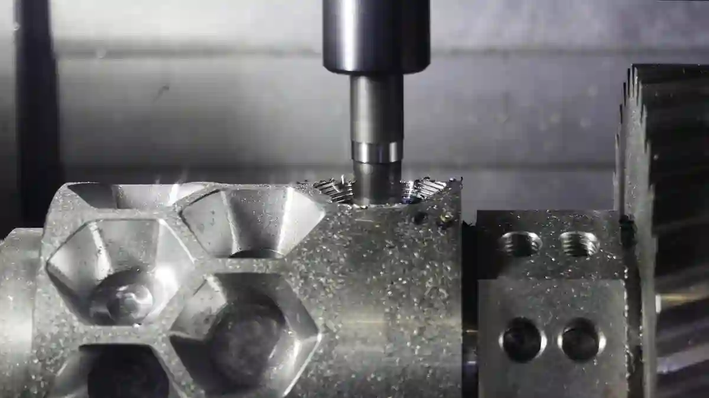

CNC Tornalama Nedir? – CNC Tornalama Teknolojisi Rehberi
CNC imalat teknolojileri içinde en yaygın ve en kritik yöntemlerden biri olan cnc tornalama nedir sorusu, özellikle hassas parça üretimi yapan sanayi firmaları için temel bir başlangıç noktasıdır. CNC tornalama, bilgisayar kontrollü torna tezgâhları kullanılarak silindirik veya dönel geometrilere sahip parçaların yüksek hassasiyetle işlenmesini sağlayan modern bir talaşlı imalat yöntemidir. Geleneksel torna işlemlerinden farklı olarak, insan müdahalesi minimuma indirilmiş; ölçü, tolerans ve yüzey kalitesi gibi kritik parametreler yazılım kontrollü hale getirilmiştir.
Günümüzde otomotivden savunma sanayine, medikal ekipman üretiminden endüstriyel makine imalatına kadar birçok sektörde hassas cnc tornalama süreçleri vazgeçilmez bir üretim standardı haline gelmiştir. Özellikle tekrarlanabilir kalite, düşük hata oranı ve seri üretime uygunluk gibi avantajlar, CNC tornalama teknolojisinin tercih edilme nedenlerini açıkça ortaya koymaktadır. Bu noktada CNC tornalama yalnızca bir üretim yöntemi değil, aynı zamanda sürdürülebilir ve ölçeklenebilir bir mühendislik yaklaşımıdır. CNC tornalama, talaşlı imalat nedir sorusuna verilen en modern ve kontrollü yanıtlardan biridir.
Bu rehberde; CNC tornalama teknolojisinin temel prensiplerinden başlayarak, cnc tornalama nasıl yapılır, cnc torna tezgahı çalışma prensibi, tolerans yönetimi, parça üretim süreçleri ve satın alma kararlarını etkileyen teknik detaylara kadar tüm süreci üretim sahasından örneklerle ele alacağız. İçerik boyunca teorik tanımların yanı sıra gerçek imalat pratiğine dayalı bilgilerle konuyu derinlemesine inceleyeceğiz.
CNC Tornalama Teknolojisinin Temel Tanımı ve Kapsamı
CNC tornalama, iş parçasının kendi ekseni etrafında döndüğü ve kesici takımın bu dönme hareketine bağlı olarak talaş kaldırdığı bir üretim sürecidir. Bu yöntemde tüm hareketler, CNC kontrol ünitesi tarafından belirlenen G kodları ve M kodları aracılığıyla otomatik olarak yönetilir. Böylece ölçü hassasiyeti, yüzey kalitesi ve geometrik doğruluk insan faktöründen bağımsız hale gelir.
Modern üretim altyapılarında cnc torna ile parça üretimi, yalnızca basit silindirik parçalarla sınırlı değildir. Çok eksenli CNC torna tezgâhları sayesinde kanal açma, diş çekme, pah kırma, delik delme ve hatta frezeleme benzeri işlemler tek bağlamada gerçekleştirilebilmektedir. Bu durum, hem üretim süresini kısaltmakta hem de ölçüsel sapmaları minimize etmektedir.
Özellikle seri üretim yapan firmalar için CNC tornalama, standartlaştırılmış kalite anlayışının temel yapı taşlarından biridir. Aynı parçanın binlerce adet üretildiği projelerde, mikron seviyesinde tutarlılık sağlayabilen bu teknoloji, kalite kontrol süreçlerini de ciddi ölçüde kolaylaştırmaktadır. Bu nedenle CNC tornalama, yalnızca bir tezgâh yatırımı değil; bütüncül bir üretim stratejisidir. CNC tornalamanın temel imalat yöntemleri içindeki yerini anlamak için, Talaşlı İmalatta Kullanılan Temel Teknikler içeriğini inceleyebilirsiniz.
CNC Tornalama ile Geleneksel Tornalama Arasındaki Temel Farklar
Geleneksel torna tezgâhlarında operatör tecrübesi ön plandayken, CNC tornalamada süreç yazılım ve mühendislik planlaması üzerine kuruludur. Manuel tornalamada ölçüsel sapmalar operatöre bağlı olarak değişkenlik gösterebilirken, CNC sistemlerde aynı program defalarca çalıştırılarak tutarlı sonuçlar elde edilir.
Bir diğer önemli fark ise cnc tornalama toleransları konusundaki yetkinliktir. Manuel sistemlerde ±0,05 mm toleranslar zorlayıcı olabilirken, CNC tornalama ile ±0,005 mm seviyelerine kadar güvenli üretim mümkündür. Bu durum özellikle medikal ve savunma sanayi gibi yüksek hassasiyet gerektiren sektörlerde CNC tornalamayı zorunlu kılmaktadır.
CNC Tornalama Hangi Parça Tipleri İçin Uygundur?
CNC tornalama; miller, burçlar, pimler, flanşlar, bağlantı elemanları ve özel geometrili dönel parçalar için ideal bir üretim yöntemidir. Parçanın eksenel simetriye sahip olması, CNC tornalama sürecini daha verimli hale getirir. Ancak canlı takımlı torna tezgâhları sayesinde eksantrik delikler ve yan yüzey işlemleri de rahatlıkla yapılabilmektedir.
Bu noktada CNC tornalama, genellikle frezeleme ile birlikte değerlendirilir. Nitekim birçok satın alma sürecinde firmalar “CNC tornalama mı frezeleme mi?” sorusunu gündeme getirir. Bu karşılaştırmaya detaylı olarak ilerleyen bölümlerde değineceğiz ve ilgili içeriklere doğal iç linkleme sağlayacağız.
CNC Torna Tezgâhı Çalışma Prensibi

CNC tornalama teknolojisinin doğru anlaşılabilmesi için, cnc torna tezgahı çalışma prensibi konusunun net biçimde kavranması gerekir. CNC torna tezgâhları, temel olarak iş parçasının yüksek hassasiyetle döndürülmesi ve kesici takımın bu dönme hareketine senkronize şekilde ilerlemesi prensibiyle çalışır. Ancak modern CNC sistemlerde bu temel yapı, yazılım destekli çok daha gelişmiş kontrol mekanizmalarıyla yönetilir.
CNC torna tezgâhının merkezinde yer alan kontrol ünitesi (CNC kontrol paneli), üretim sürecinin beyni konumundadır. Bu üniteye yüklenen programlar sayesinde takım hareketleri, ilerleme hızları, devir sayıları ve talaş kaldırma derinlikleri mikron seviyesinde kontrol edilir. Böylece üretim süreci, operatör müdahalesine gerek kalmadan, önceden belirlenmiş parametrelere göre tekrarlanabilir şekilde yürütülür.
Bu yapı sayesinde hassas cnc tornalama uygulamalarında yüzey pürüzlülüğü, ölçüsel doğruluk ve geometrik toleranslar stabil hale gelir. Özellikle seri üretimde her parçanın aynı kalite standardında çıkması, CNC tornalama teknolojisini geleneksel yöntemlerden kesin biçimde ayıran temel unsurlardan biridir. CNC üretim yaklaşımlarının genel çerçevesini anlamak için CNC Üretim Teknolojileri blog sayfasını inceleyin.
CNC Torna Tezgâhının Temel Bileşenleri
Bir CNC torna tezgâhının performansı, yalnızca yazılıma değil; mekanik ve elektronik bileşenlerin bütüncül uyumuna bağlıdır. Bu bileşenlerin her biri, üretim kalitesini doğrudan etkiler.
Ana bileşenler şunlardır:
- Fener mili (Spindle): İş parçasının dönmesini sağlar ve yüzey kalitesinde kritik rol oynar.
- Taret (Takım Revolveri): Birden fazla kesici takımın otomatik olarak değişmesini mümkün kılar.
- Lineer kızaklar: Takım hareketlerinin hassas ve titreşimsiz olmasını sağlar.
- Servo motorlar: X ve Z eksenlerindeki konumlandırma hassasiyetini belirler.
- CNC kontrol ünitesi: Tüm hareketlerin ve işlemlerin yazılım üzerinden yönetilmesini sağlar.
Bu bileşenlerin doğru konfigürasyonu, özellikle cnc tornalama toleransları açısından belirleyicidir. Zayıf mekanik yapı veya kalitesiz servo sistemler, yazılım ne kadar iyi olursa olsun istenen hassasiyetin yakalanmasını engeller.
CNC Torna Tezgâhlarında Eksen Yapısı ve Hareket Mantığı
Standart CNC torna tezgâhları genellikle X ve Z ekseni üzerinden çalışır. Z ekseni iş parçası boyunca ilerlemeyi, X ekseni ise çap yönündeki talaş kaldırmayı temsil eder. Ancak günümüzde canlı takımlı ve C eksenli CNC torna tezgâhları ile bu yapı çok daha gelişmiş hale gelmiştir.
C ekseni sayesinde iş parçası belirli açılarda sabitlenebilir; canlı takımlar aracılığıyla delik delme, kanal açma ve yan yüzey işlemleri gerçekleştirilebilir. Bu durum, CNC tornalamayı tek başına bir işlem olmaktan çıkararak, çok fonksiyonlu bir üretim merkezine dönüştürür. Özellikle karmaşık geometrilere sahip parçalarda, bağlama sayısının azalması hem zaman kazandırır hem de ölçüsel sapmaları minimize eder.
CNC Tornalama Nasıl Yapılır? (Adım Adım Üretim Süreci)
Üretim planlamasında en sık sorulan sorulardan biri cnc tornalama nasıl yapılır sorusudur. CNC tornalama süreci, yalnızca tezgâh başında başlayan bir işlem değildir; tasarımdan kalite kontrole kadar uzanan çok aşamalı bir mühendislik sürecidir.
Aşağıda CNC tornalama işlemi, sahada uygulanan gerçek üretim adımlarıyla özetlenmiştir.
Parça Tasarımı ve Teknik Resim Hazırlığı
CNC tornalama sürecinin ilk ve en kritik adımı, doğru hazırlanmış bir teknik resimdir. Teknik resimde; ölçüler, toleranslar, yüzey pürüzlülük değerleri ve malzeme bilgileri açık biçimde belirtilmelidir. Özellikle cnc tornalama toleransları, üretim yöntemini ve takım seçimini doğrudan etkiler.
Yetersiz veya hatalı teknik resimler, üretim sırasında revizyonlara ve zaman kaybına neden olur. Bu nedenle CNC tornalama projelerinde, tasarım ve üretim ekiplerinin birlikte çalışması büyük önem taşır.
CNC Programlama (G Kodları ve İşleme Stratejisi)
Teknik resim tamamlandıktan sonra CNC programlama aşamasına geçilir. Bu aşamada CAM yazılımları kullanılarak takım yolları oluşturulur ve işleme stratejisi belirlenir. Programlama sürecinde şu parametreler netleştirilir:
- Kesici takım türü ve geometrisi
- Devir sayısı (RPM)
- İlerleme hızı (Feed Rate)
- Talaş derinliği
- İşleme sırası
Bu aşama, cnc torna ile parça üretimi sürecinin en kritik noktalarından biridir. Yanlış belirlenen ilerleme veya kesme parametreleri, hem takım ömrünü kısaltır hem de yüzey kalitesini olumsuz etkiler.
İş Parçası Bağlama ve Referanslama
CNC tornalamada bağlama yöntemi, ölçü hassasiyetini doğrudan etkiler. İş parçası genellikle aynaya veya özel fikstürlere bağlanır. Bağlama sırasında eksen kaçıklıkları minimum seviyede tutulmalıdır.
Referans noktalarının (zero point) doğru tanımlanması, tüm programın doğruluğunu belirler. Bu nedenle bağlama ve referanslama işlemleri, deneyimli operatörler tarafından titizlikle yapılmalıdır. Özellikle seri üretimde yapılan küçük bir referans hatası, yüzlerce parçanın hatalı çıkmasına neden olabilir.
Talaş Kaldırma ve İşleme Aşamaları
Bağlama ve programlama tamamlandıktan sonra CNC tornalama işlemi başlatılır. İşleme sırasında kaba talaş kaldırma ve finisaj işlemleri ayrı ayrı planlanır. Kaba işlemede yüksek talaş kaldırma hedeflenirken, finisaj aşamasında yüzey kalitesi ve ölçü hassasiyeti ön plana çıkar.
Bu aşamada cnc tornalama avantajları net biçimde ortaya çıkar. Aynı program kullanılarak, farklı vardiyalarda dahi tutarlı kalite elde edilebilir. İnsan kaynaklı hatalar minimuma inerken, üretim süresi öngörülebilir hale gelir.
CNC Tornalama Avantajları ve Üretime Sağladığı Katma Değer
Modern imalat dünyasında CNC tornalama teknolojisinin bu kadar yaygınlaşmasının temel nedeni, sunduğu teknik ve operasyonel avantajlardır. Özellikle seri üretim, hassasiyet gerektiren projeler ve kalite standardizasyonu söz konusu olduğunda cnc tornalama avantajları, geleneksel yöntemlere kıyasla açık biçimde öne çıkar.
CNC tornalama; yalnızca hızlı üretim sağlamakla kalmaz, aynı zamanda süreç kontrolünü ve izlenebilirliği mümkün kılar. Bu durum, üretim planlamasından kalite kontrol aşamasına kadar tüm zinciri daha yönetilebilir hale getirir. Satın alma ve yöntem karşılaştırması açısından CNC Tornalama mı Frezeleme mi? Satın Alma Açısından Farklar başlıklı içerik, karar aşamasındaki kullanıcılar için güçlü bir tamamlayıcıdır.
Tekrarlanabilir Kalite ve Ölçüsel Tutarlılık
CNC tornalamanın en güçlü yönlerinden biri, aynı parçanın defalarca aynı ölçü ve kalitede üretilebilmesidir. Programlanmış bir CNC torna tezgâhı, operatör değişse dahi aynı sonuçları üretir. Bu da özellikle otomotiv, savunma sanayi ve medikal sektörlerinde vazgeçilmez bir avantajdır.
Örneğin hassas cnc tornalama uygulamalarında ±0,01 mm altındaki toleranslar güvenle sağlanabilir. Bu seviyedeki ölçü hassasiyeti, manuel tornalama yöntemleriyle sürdürülebilir değildir. CNC tornalama, bu noktada kaliteyi bir tesadüf olmaktan çıkarıp sistematik bir çıktıya dönüştürür.
Üretim Süresinin Kısalması ve Operasyonel Verimlilik
CNC tornalama teknolojisi, manuel ayar ve ölçüm ihtiyacını büyük ölçüde ortadan kaldırır. Takım değişimleri otomatik olarak yapılır, işlem sıraları program üzerinden yönetilir ve duruş süreleri minimize edilir. Bu da birim parça başına düşen üretim süresini ciddi oranda azaltır.
Özellikle cnc torna ile parça üretimi yapılan seri işlerde, aynı programın defalarca kullanılması sayesinde üretim planlaması daha öngörülebilir hale gelir. Bu durum; teslim sürelerinin kısalması, stok yönetiminin iyileştirilmesi ve müşteri memnuniyetinin artması gibi doğrudan ticari faydalar sağlar.
Karmaşık Geometrilerin Üretilebilirliği
Canlı takımlı ve çok eksenli CNC torna tezgâhları sayesinde, yalnızca silindirik değil; karmaşık ve çok yüzeyli parçalar da tek bağlamada üretilebilir. Bu, bağlama sayısını azaltarak hem zaman kazandırır hem de ölçüsel hataları minimize eder.
Özellikle frezeleme operasyonlarının torna ile entegre edildiği durumlarda, parça üzerinde ek işlem gereksinimi ortadan kalkar. Bu avantaj, satın alma süreçlerinde CNC tornalamanın neden tercih edildiğini açık biçimde ortaya koyar.
Hassas CNC Tornalama ve Tolerans Yönetimi
CNC tornalama teknolojisinin endüstride bu kadar kritik bir rol üstlenmesinin temel nedenlerinden biri, hassasiyet ve tolerans yönetimi konusundaki üstünlüğüdür. Özellikle yüksek performanslı mekanik parçalar ve montaj hassasiyeti gerektiren uygulamalarda cnc tornalama toleransları, ürünün fonksiyonelliğini doğrudan etkiler.
Hassas CNC tornalama, yalnızca tezgâhın teknik kapasitesiyle değil; takım seçimi, işleme stratejisi ve ölçüm altyapısıyla birlikte değerlendirilmelidir.
Tolerans Kavramı ve CNC Tornalamadaki Önemi
Tolerans, bir ölçünün kabul edilebilir sapma aralığını ifade eder. CNC tornalama süreçlerinde toleranslar, genellikle teknik resimde belirtilir ve üretim süreci bu değerlere göre planlanır. ±0,02 mm ile ±0,005 mm aralığındaki toleranslar, CNC tornalama için yaygın kabul gören değerlerdir.
Bu seviyede toleransların sürdürülebilir biçimde sağlanabilmesi, yalnızca CNC tezgâhı ile değil; proses kontrolü ve kalite güvence sistemleriyle mümkündür. Aksi halde teorik olarak mümkün olan hassasiyet, pratikte sağlanamaz. CNC tornalama toleransları belirlenirken ISO 2768 genel tolerans standardı üretimde ortak bir referans noktası sunar.
Hassas CNC Tornalamada Takım ve Malzeme Etkileşimi
Takım geometrisi, kaplama türü ve kesme parametreleri; hassas tornalama sonuçlarını doğrudan etkiler. Sert malzemelerde yanlış takım seçimi, yüzey pürüzlülüğünü artırırken tolerans kaçmalarına neden olabilir.
Bu nedenle hassas cnc tornalama projelerinde, takım üreticilerinin teknik önerileri ve saha tecrübeleri birlikte değerlendirilmelidir. Özellikle paslanmaz çelik, titanyum ve alüminyum alaşımlarında farklı kesme stratejileri uygulanması gerekir.
Isıl Etki, Titreşim ve Ölçüsel Sapmalar
CNC tornalama sırasında oluşan ısı, hem takım ömrünü hem de ölçüsel doğruluğu etkiler. Yetersiz soğutma veya yanlış kesme parametreleri, parçanın genleşmesine ve tolerans dışına çıkmasına neden olabilir.
Titreşim (chatter) ise yüzey kalitesini düşüren en önemli faktörlerden biridir. Bu nedenle hassas CNC tornalamada; tezgâh rijitliği, takım boyu ve bağlama yöntemi dikkatle optimize edilmelidir.
Ölçüm, Kalite Kontrol ve Üretim Sonrası Doğrulama
CNC tornalama süreci, talaş kaldırma işlemi tamamlandığında bitmez. Asıl kritik aşama, üretilen parçanın teknik resme uygunluğunun doğrulanmasıdır. Bu noktada ölçüm ve kalite kontrol süreçleri devreye girer.
Özellikle cnc torna ile parça üretimi yapılan projelerde, ölçüm sonuçlarının kayıt altına alınması ve izlenebilirlik sağlanması büyük önem taşır. Bu yaklaşım, hem müşteri güvenini artırır hem de olası üretim hatalarının kök neden analizini kolaylaştırır.
Ölçüm Ekipmanları ve Yöntemleri
CNC tornalama sonrası ölçümde; mikrometreler, komparatörler, mastarlar ve CMM (Koordinat Ölçüm Makineleri) yaygın olarak kullanılır. Ölçüm yöntemi, tolerans seviyesine ve parça geometrisine göre belirlenir.
Yüksek hassasiyet gerektiren projelerde CMM ölçümleri tercih edilirken, seri üretimde proses içi ölçüm yöntemleri ile hızlı kontrol sağlanır. Bu yaklaşım, hatalı üretimin erken tespit edilmesini mümkün kılar.
Dokümantasyon ve İzlenebilirlik
Kalite kontrol yalnızca ölçüm yapmakla sınırlı değildir. Ölçüm sonuçlarının raporlanması, parti bazlı izlenebilirlik ve kalite dokümantasyonu, profesyonel CNC tornalama hizmetlerinin ayrılmaz bir parçasıdır.
Bu sistematik yapı, özellikle denetime tabi sektörlerde CNC tornalama hizmeti sunan firmaların tercih edilme nedenleri arasında yer alır.
CNC Tornalama ile Frezeleme Arasındaki Temel Farklar
Üretim planlaması ve satın alma süreçlerinde en sık karşılaşılan sorulardan biri, CNC tornalama mı yoksa CNC frezeleme mi tercih edilmeli? sorusudur. Bu karar, yalnızca makine parkına değil; parça geometrisine, tolerans beklentisine ve üretim hacmine bağlı olarak verilmelidir. Bu nedenle cnc tornalama nedir sorusu, çoğu zaman frezeleme teknolojileriyle birlikte değerlendirilir.
CNC tornalama, iş parçasının döndüğü; frezelemede ise kesici takımın döndüğü bir üretim yaklaşımı sunar. Bu temel fark, her iki yöntemin kullanım alanlarını net biçimde ayırır.
Parça Geometrisine Göre Doğru Üretim Yöntemi
Dönel simetriye sahip parçalar (mil, burç, pim, flanş vb.) için CNC tornalama açık ara en verimli çözümdür. Bu tür parçalarda cnc torna ile parça üretimi, hem daha hızlı hem de daha hassas sonuçlar verir.
Buna karşılık prizmatik, çok yüzeyli ve karmaşık cep geometrilerine sahip parçalar frezeleme için daha uygundur. Ancak canlı takımlı CNC torna tezgâhları sayesinde bu ayrım günümüzde giderek bulanıklaşmaktadır. Birçok parça, tornalama ve frezeleme işlemlerinin entegre kullanımıyla tek bağlamada üretilebilmektedir.
Bu noktada satın alma kararları verilirken yalnızca makine türü değil, üretim stratejisi de dikkate alınmalıdır.
Tolerans, Yüzey Kalitesi ve Hassasiyet Karşılaştırması
Hassasiyet gerektiren dönel parçalarda CNC tornalama, frezelemeye kıyasla daha stabil toleranslar sunar. Özellikle çap, eşmerkezlilik ve yüzey pürüzlülüğü açısından hassas cnc tornalama uygulamaları belirgin avantaj sağlar.
Frezeleme işlemleri çok yönlü geometriler üretse de, dönel yüzeylerde istenen yüzey kalitesini sağlamak için ek finisaj işlemleri gerekebilir. Bu durum, toplam üretim süresini ve maliyeti artırabilir. CNC tornalama ise dönel yüzeylerde doğal olarak yüksek yüzey kalitesi üretir.
Maliyet ve Üretim Süresi Açısından Değerlendirme
Seri üretimde CNC tornalama, frezelemeye kıyasla daha düşük birim maliyet sunar. Aynı programın defalarca kullanılabilmesi ve kısa çevrim süreleri, bu avantajın temel nedenidir. Özellikle yüksek adetli işlerde cnc tornalama avantajları ekonomik açıdan belirginleşir.
Düşük adetli ve prototip ağırlıklı işlerde ise frezeleme esnekliği öne çıkabilir. Bu nedenle hangi yöntemin daha avantajlı olduğu, üretim hacmine göre değerlendirilmelidir.
CNC Tornalama Hizmeti Satın Alırken Dikkat Edilmesi Gerekenler
CNC tornalama teknolojisinin sunduğu avantajlardan maksimum fayda sağlamak için, doğru üretim partnerinin seçilmesi kritik öneme sahiptir. CNC tornalama hizmeti satın alırken yalnızca fiyat odaklı değil; teknik altyapı ve süreç yönetimi odaklı bir değerlendirme yapılmalıdır.
Bu noktada birçok firma, yalnızca cnc tornalama nedir sorusuna yanıt aramakla kalmaz; aynı zamanda hangi tedarikçinin uzun vadeli iş ortağı olabileceğini de sorgular.
Makine Parkı ve Teknik Altyapı
Bir CNC tornalama firmasının sahip olduğu makine parkı, sunabileceği hizmet kalitesinin en net göstergelerinden biridir. Modern, bakımlı ve çok eksenli CNC torna tezgâhları; daha karmaşık parçaların daha az bağlama ile üretilmesini sağlar.
Canlı takımlı tezgâhlar, C ekseni ve otomatik takım değiştiriciler; özellikle cnc tornalama toleransları açısından avantaj sağlar. Bu nedenle satın alma sürecinde makine parkı detaylı şekilde incelenmelidir.
Mühendislik Desteği ve Proses Bilgisi
CNC tornalama yalnızca bir makine operasyonu değildir; mühendislik bilgisi gerektiren bir süreçtir. Teknik resim yorumlama, takım seçimi, kesme parametrelerinin optimizasyonu ve proses planlama; üretim kalitesini doğrudan etkiler.
Bu nedenle cnc tornalama nasıl yapılır sorusuna yalnızca teorik değil, pratik cevaplar verebilen firmalar tercih edilmelidir. Üretim sahasında edinilmiş deneyim, birçok olası hatanın daha işleme başlamadan önlenmesini sağlar.
Kalite Kontrol, Ölçüm ve Dokümantasyon Yetkinliği
Profesyonel CNC tornalama hizmeti sunan firmalar, ölçüm ve kalite kontrol süreçlerini üretimin ayrılmaz bir parçası olarak görür. Parça ölçüm raporları, tolerans doğrulama kayıtları ve izlenebilirlik dokümantasyonu; özellikle kurumsal müşteriler için kritik öneme sahiptir.
Bu sistematik yapı, uzun vadeli iş birliklerinin temelini oluşturur ve tedarik zinciri güvenilirliğini artırır.
CNC Tornalamanın Sektörel Kullanım Alanları
CNC tornalama teknolojisi, çok sayıda sektörde farklı ihtiyaçlara cevap verebilecek esnekliğe sahiptir. Özellikle yüksek hassasiyet, dayanıklılık ve tekrarlanabilirlik gerektiren uygulamalarda CNC tornalama vazgeçilmezdir.
Otomotiv ve Makine İmalatı
Otomotiv sektöründe mil, burç, bağlantı elemanları ve özel mekanik parçalar için CNC tornalama yaygın olarak kullanılır. Bu sektörde cnc torna ile parça üretimi, hem güvenlik hem de performans açısından kritik rol oynar.
Savunma, Havacılık ve Medikal Sektörler
Yüksek tolerans ve izlenebilirlik gerektiren bu sektörlerde hassas cnc tornalama süreçleri standart üretim yöntemi haline gelmiştir. Parça kalitesi, yalnızca ölçü değil; aynı zamanda malzeme yapısı ve yüzey bütünlüğü açısından da değerlendirilir.
CNC Tornalama Teknolojisinin Geleceği ve Dijital Üretim Entegrasyonu
Sanayide dijitalleşmenin hız kazanmasıyla birlikte CNC tornalama teknolojisi de klasik bir talaşlı imalat yöntemi olmaktan çıkmış, akıllı üretim sistemlerinin temel bileşenlerinden biri haline gelmiştir. Günümüzde cnc tornalama nedir sorusu yalnızca mekanik bir işlem tanımını değil; veri odaklı, izlenebilir ve entegre bir üretim yaklaşımını da ifade etmektedir.
Endüstri 4.0 kapsamında CNC torna tezgâhları; üretim verilerini anlık olarak toplayabilen, proses parametrelerini otomatik optimize edebilen ve kalite kontrol sistemleriyle entegre çalışabilen yapılar sunmaktadır. Bu dönüşüm, özellikle seri üretimde kalite dalgalanmalarını minimize ederken, üretim maliyetlerinin daha öngörülebilir hale gelmesini sağlamaktadır.
Endüstri 4.0 ve CNC Tornalama Süreçleri
Endüstri 4.0 yaklaşımıyla birlikte CNC tornalama süreçlerinde sensörler, otomasyon yazılımları ve veri analiz sistemleri aktif olarak kullanılmaktadır. Takım aşınması, titreşim seviyesi ve sıcaklık gibi kritik parametreler anlık olarak izlenebilmekte; olası kalite problemleri henüz parça işlenmeden önce tespit edilebilmektedir.
Bu yapı, özellikle hassas cnc tornalama gerektiren projelerde ciddi bir avantaj sağlar. Çünkü tolerans kaçmaları yalnızca sonuç aşamasında değil, proses esnasında da kontrol altına alınır. Bu yaklaşım, geleneksel “son kontrol” anlayışının yerini “proses içi kalite” anlayışına bırakmasını sağlamıştır.
Dijital İzlenebilirlik ve Üretim Verisi Yönetimi
Modern CNC tornalama tesislerinde her parça, üretim parametreleriyle birlikte dijital olarak izlenebilir hale gelmiştir. Hangi vardiyada, hangi tezgâhta, hangi kesme parametreleriyle üretildiği kayıt altına alınır. Bu yaklaşım, özellikle otomotiv ve savunma sanayinde zorunlu hale gelen kalite standartlarının karşılanmasını kolaylaştırır.
Bu noktada cnc tornalama avantajları, yalnızca üretim hızı ve hassasiyetle sınırlı kalmaz; aynı zamanda şeffaflık ve denetlenebilirlik gibi kurumsal beklentileri de karşılar.
CNC Tornalama Süreçlerinde Gerçek Üretim Deneyimi ve Uzmanlık Yaklaşımı
CNC tornalama teknolojisinin teorik olarak anlatılması kadar, sahada nasıl uygulandığı da büyük önem taşır. Gerçek üretim ortamlarında edinilen deneyim; takım seçiminden bağlama yöntemlerine, tolerans yönetiminden kalite kontrol süreçlerine kadar birçok kritik detayı belirler.
Uzun yıllardır talaşlı imalat sektöründe faaliyet gösteren firmalar için cnc torna ile parça üretimi, yalnızca bir hizmet değil; sürekli geliştirilen bir mühendislik pratiğidir. Özellikle farklı malzemelerle (çelik, paslanmaz çelik, alüminyum, pirinç vb.) çalışılan projelerde, her malzemenin işleme karakteristiği ayrı ayrı değerlendirilir.
Bu yaklaşım sayesinde CNC tornalama süreçleri standart bir kalıba sıkıştırılmaz; her proje özelinde optimize edilir. Bu da hem parça ömrünü artırır hem de müşteri beklentilerinin üzerinde sonuçlar elde edilmesini sağlar.
Sonuç – CNC Tornalama Neden Kritik Bir Üretim Teknolojisidir?
Tüm bu teknik, operasyonel ve stratejik değerlendirmeler ışığında cnc tornalama nedir sorusunun yanıtı netleşmektedir. CNC tornalama; hassasiyet, tekrarlanabilir kalite, üretim verimliliği ve dijital entegrasyon gibi unsurları tek bir üretim yaklaşımında birleştiren kritik bir teknolojidir.
Özellikle cnc tornalama nasıl yapılır sorusuna yalnızca teorik değil, uygulamaya dayalı cevaplar verebilen firmalar; uzun vadeli üretim ortakları olarak öne çıkar. Tolerans yönetimi, kalite kontrol altyapısı ve mühendislik desteği güçlü olan CNC tornalama hizmetleri, işletmelerin rekabet gücünü doğrudan artırır.
Günümüz sanayisinde CNC tornalama, yalnızca bir imalat yöntemi değil; stratejik bir yatırım ve sürdürülebilir büyümenin temel bileşenlerinden biridir.